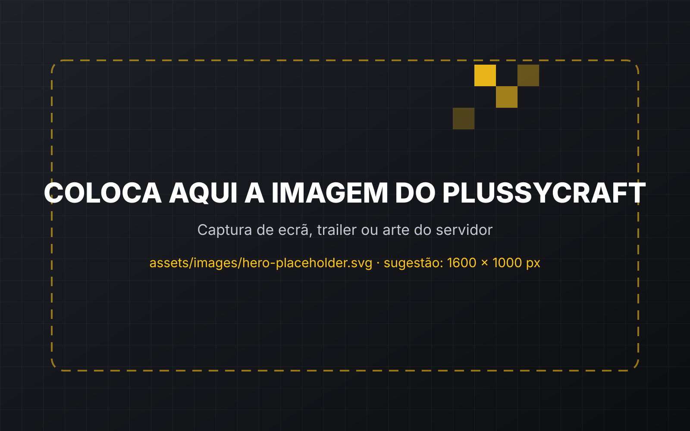

Comunidade
Junta-te a uma comunidade ativa e faz novas amizades.
A tua aventura começa aqui.
Entra no PlussyCraft, constrói a tua história, conquista o teu lugar e faz parte da nossa comunidade.
play.plussycraft.pt

A tua aventura começa aqui.
Um servidor pensado para jogares ao teu ritmo, sozinho ou com amigos.
Junta-te a uma comunidade ativa e faz novas amizades.
Conquista novos ranks, desbloqueia áreas e evolui dentro do servidor.
Participa em eventos, desafios e atividades especiais.
Constrói a tua riqueza através do sistema económico do servidor.
As principais funcionalidades do PlussyCraft. Clica numa para saberes mais.
Sobe de Agricultura Base a Magnata e desbloqueia novos produtos, áreas e melhores preços de venda.
Ganha moedas, monta a tua banca e negoceia com outros jogadores.
Ver na WikiTorneios, caças ao tesouro e eventos sazonais com prémios.
Ver calendárioVIPs, ranks, kits e cosméticos para melhorares a tua experiência.
Ir à lojaObjetivos diários e semanais com recompensas em moedas e reputação.
Ver missõesCria uma guilda, convida amigos e disputa o topo do ranking.
Saber maisFuncionalidades criadas de raiz para o PlussyCraft. Descobre-as na Wiki.
Explorar sistemasPrecisas apenas do Minecraft Java Edition.
Usa a versão Java Edition 1.21.x.
Em Multijogador, escolhe Adicionar servidor e cola o IP play.plussycraft.pt.
No primeiro login, cria a tua palavra-passe com /register.
Conhece outros jogadores, acompanha os eventos e fala com a equipa no nosso Discord.